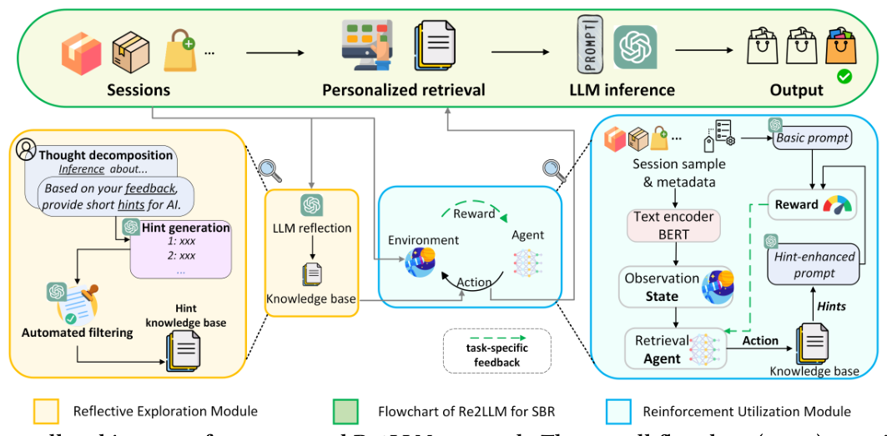

Re2LLM: Reflective Reinforcement Large Language Model for Session-based Recommendation (反思式强化大语言模型会话推荐)
- 会议/期刊: AAAI 2025
- 作者与机构: Ziyan Wang, Yingpeng Du, Zhu Sun, Haoyan Chua, Kaidong Feng, Wenya Wang, Jie Zhang（南洋理工大学、A*STAR、燕山大学）
- 推荐链路定位: 召回（会话级 Next-Item 候选排序）
- 研究方向: 大语言模型推荐 / 序列与会话推荐
- 论文原文: 论文原文链接
- 开源代码: 开源代码仓库链接
TL;DR (1分钟核心速览)
会话推荐中，Prompt 式 LLM 缺乏任务反馈、难以写出最优提示，微调式 LLM 又代价高昂且依赖开源主干。Re2LLM 让 LLM 对自身预测错误做多轮自反思，把纠错经验沉淀为自然语言"提示（hint）"知识库，再用 PPO 训练一个轻量检索智能体按会话上下文选提示注入 Prompt，主干全程冻结。在 Movie/Game 两数据集、采样排序协议下，Few-shot 设置相对最强基线平均提升 15.49% 与 5.77%，且逼近甚至超过全量数据训练的深度模型。
Background & Motivation (背景与核心矛盾)
- 主流范式: SBR 主流分两支——Prompt 式（LLMRank、NIR 用 in-context learning 直接让 LLM 排序）与微调式（TALLRec、PALR 用 LoRA/全参微调注入领域知识）。
- 前人局限: Prompt 式缺乏任务特定反馈，手工提示与 LLM 对 SBR 的理解不对齐，易幻觉；微调式算力开销大、灾难性遗忘、且被绑定在开源小主板上，能力弱于 GPT-4 级模型。
- 核心洞察 (Key Insight): LLM 最容易理解"自己总结出来的知识"；而提示的效用没有显式标签，但可以用"注入提示后推荐指标的增量"作为奖励信号，把提示选择建模为序贯决策。
- 本文切入点: 把"领域知识"外置为可检索的提示库，用 DRL 学一个会话感知的提示检索器，从而在不微调主干的前提下获得任务特定反馈。
Method (核心方法设计)
1. 整体框架 (Overall Architecture)
离线阶段：对训练会话用基础 Prompt 让 LLM 输出 Top-10 列表，筛出未命中真值的错误会话，经 Prompt 2→3→4 的链式反思（先无真值发散找错因、再给真值收敛找准确错因、最后脱敏总结为短提示），并用自动过滤（有效性 + 非冗余）维护提示知识库 \(\mathcal{H}\)。在线阶段：BERT 编码会话为状态\(\mathbf{z}\)，策略网络选出一条提示注入 Prompt 5，由冻结的 GPT-4 输出最终排序；检索器用 PPO 依据"指标增量"奖励更新。
flowchart TD
A["会话 s + 候选集 C"] --> B["基础 Prompt 推理 O(s)"]
B --> C{"命中真值?"}
C -->|否| D["多轮自反思 Prompt2-4 生成 hint"]
D --> E["自动过滤: 有效性+非冗余"]
E --> F["提示知识库 H"]
A --> G["BERT 编码状态 z"]
F --> H["PPO 检索智能体 π_θ 选 hint"]
G --> H
H --> I["Hint-Enhanced Prompt 5 → 冻结 LLM → 最终排序"]
2. 关键设计拆解 (Key Designs)
-
多轮自反思提示生成（Reflective Exploration）：痛点在于人工提示与 LLM 语义空间不对齐。做法是先用无真值的 Prompt 2 让 LLM 自由发散错因（保证多样性），再用 Prompt 3 揭示真值收敛到相关错因（保证准确性），最后 Prompt 4 要求"不得泄露目标物品"地压缩为短提示。由于提示由 LLM 自身语言生成，天然落在其可理解分布内，注入后即能激活正确推理路径。
-
自动过滤构建知识库：并非所有提示都有用，且大量会话错因重复。有效性判据为 \(v^s_{l+1}\in O^*(s)\ \&\ v^s_{l+1}\notin O(s)\)，即仅当注入提示后由"未命中"变为"命中"才入库；非冗余判据为\(\sum_{h\in\mathcal{H}}\mathrm{LLM}(P_6(h',h))==0\)，即候选提示与库内所有提示语义均不同才入库。前者剔除噪声提示、后者控制库规模与检索难度。
-
PPO 提示检索与训练目标：状态 \(\mathbf{z}=\mathrm{BERT}(s)\)，动作\(a=\mathrm{softmax}(\mathbf{W}\cdot\mathbf{z})\)为\(|\mathcal{H}|+1\)维（含"不选"），奖励采用相对式\(r=m(O^*(s))-m(O(s))\)，只奖励"因该提示带来的增量"而非绝对表现。目标为 $\(\mathcal{L}_{PPO}=\mathbb{E}\left[R(\mathbf{z},a)-\beta\,\mathrm{KL}(\pi_{\theta_{old}},\pi_\theta)\right]\)$ 配合 \(\epsilon=0.05\)的\(\epsilon\)-greedy 探索与回放缓冲。相对奖励避免了"会话本身简单、绝对分高但与提示无关"的虚假信用分配；KL 项约束策略不偏离过远，保证训练稳定。推理时仅需一次 BERT 前向 + 一次 MLP，开销可忽略。
Experimental Setup & Evaluation Protocol (实验设置与评估协议)
- 数据集与预处理: 按时间戳将同一用户单日交互切为一个会话，过滤交互数 <3 的会话与物品，评分视为正隐式反馈；沿用数据增广将长度 \(|s|\)的会话扩展为\(|s|-1\) 个训练样本。
| 数据集 | #Sessions | #Items | 平均长度 | 特征/场景说明 |
|---|---|---|---|---|
| Hetrec2011-Movielens | 468,389 | 8,233 | 10.17 | 标题、类型、演员、年份、国家、导演 |
| Amazon Game | 387,906 | 22,576 | 6.28 | 标题、品类、标签、品牌、描述 |
- 数据划分与防穿越 (Splitting Strategy): 会话级
比例划分7:1:2（train/valid/test），会话内以最后一项为目标，属严格时间序内预测，无跨会话信息泄露。 - 排名评测协议 (Ranking Protocol):
Sampled Ranking——从测试集随机抽 2,000 个会话，每个正样本配 49 个随机负样本（1:49），报告 HR@{5,10} 与 NDCG@{5,10}，五次不同随机种子取均值。 - 对比基线与超参设置: 8 个基线，含 FPMC、GRU4Rec、NARM、SRGNN、GCEGNN、AttenMixer（深度模型，Few-shot 下设
-attr变体融合 BERT 文本属性）与 LLMRank、NIR（LLM 基线）；统一嵌入维度 \(d=768\)对齐 BERT，Optuna 调 lr/weight decay/batch size；LLM 主干为gpt-4API；候选集\(|\mathcal{C}|=50\)、知识库\(n_h=20\)、Few-shot 训练样本\(n_e=500\)；\(t\)-test\(p<0.05\) 显著性检验。
Key Experimental Results (实验关键数据)
1. 主实验对比 (Main Results)
| Setting | Model | Movie HR@5 | Movie HR@10 | Movie NDCG@10 | Game HR@5 | Game HR@10 | Game NDCG@10 |
|---|---|---|---|---|---|---|---|
| Full | GCEGNN | 0.3962 | 0.5895 | 0.3281 | 0.4826 | 0.5523 | 0.4332 |
| Full | AttenMixer | 0.3880 | 0.5727 | 0.3472 | 0.4885 | 0.5838 | 0.4226 |
| Full | Re2LLM | 0.4126 | 0.5735 | 0.3358 | 0.5664 | 0.7173 | 0.4689 |
| Full | Improv. | +4.14%* | +0.14% | -3.39% | +15.95%* | +22.87%* | +8.24%* |
| Few-shot | AttenMixer-attr | 0.3397 | 0.5056 | 0.2795 | 0.2084 | 0.3121 | 0.1727 |
| Few-shot | LLMRank | 0.3649 | 0.5110 | 0.2784 | 0.4947 | 0.6636 | 0.4531 |
| Few-shot | NIR | 0.3587 | 0.4901 | 0.2648 | 0.5291 | 0.6434 | 0.4346 |
| Few-shot | Re2LLM | 0.4126 | 0.5735 | 0.3358 | 0.5664 | 0.7173 | 0.4689 |
| Few-shot | Improv. | +13.07%† | +12.23%† | +20.14%† | +7.05%† | +8.09%† | +3.49%† |
2. 消融实验 (Ablation Study)
| 变体 | Movie HR@10 | Movie NDCG@10 | Game HR@10 | Game NDCG@10 |
|---|---|---|---|---|
| w/o-HE（仅基础 Prompt） | 0.5458 | 0.3198 | 0.6771 | 0.4550 |
| w/o-AF（不过滤全入库） | 0.5592 | 0.3289 | 0.6923 | 0.4602 |
| w/o-DRL(RAN)（随机选提示） | 0.4960 | 0.2908 | 0.6345 | 0.4107 |
| w/o-DRL(ALL)（拼接全部提示） | 0.5434 | 0.3235 | 0.6897 | 0.4592 |
| Re2LLM | 0.5735 | 0.3358 | 0.7173 | 0.4689 |
3. 关键实验发现 (Key Findings)
- 提示选择比提示存在更关键：w/o-DRL(RAN) 在 Movie 上 HR@10 仅 0.4960，甚至低于 w/o-HE 的 0.5458——随机提示会误导 LLM 推理产生负收益；而 w/o-DRL(ALL) 拼接全部提示仅比 w/o-HE 提升约 0.2%，说明"无差别注入"几乎无效，会话感知的选择才是增益来源。
- Few-shot 下深度模型崩塌、LLM 方法稳健：AttenMixer-attr 在 Game 上 HR@10 从全量 0.5838 跌至 0.3121（跌幅近 47%），而 Re2LLM 在 Few-shot 下与全量设置数值完全一致（0.7173），证明其知识来自 LLM 自反思而非样本拟合，天然抗稀疏。
- 知识库规模与训练样本存在甜点：知识库增至 20 时指标持续上升，超过后因检索器优化难度上升而轻微回落；检索器训练样本少于 50 时性能甚至低于随机选提示（欠训练），500 后增益饱和，故 \(n_h=20\)、\(n_e=500\) 为效率与效果的平衡点；相对奖励显著优于绝对奖励（Movie HR@10 0.5735 vs. 0.5143）。
Highlights & Limitations (亮点、对比与审稿批判)
- 与代表作对比 (vs. Prior Work): 相比 LLMRank/NIR 的固定手工提示，本文用任务反馈驱动的检索器实现会话级自适应提示；相比 TALLRec/PALR 的微调路线，本文主干冻结、仅训练一个 MLP 策略网络，成本低数个量级且可直接挂载 GPT-4 闭源 API；相比 DRDT 的逐案迭代反思，本文把反思结果沉淀为全局可复用知识库，避免每个会话重复反思的推理开销。
- 可迁移亮点: ①"用指标增量作相对奖励"的提示选择范式可迁移到任意 LLM 排序/重排场景；②"无真值发散 + 有真值收敛 + 脱敏压缩"的三段式反思链，是低成本构造领域提示库的通用模板。
- 审稿级局限批判: ①评测采用 1:49 采样排序而非全库 Full-Ranking，且仅抽 2,000 个测试会话，绝对数值可能高估，缺少全库排序与冷启动分桶验证；②提示生成与在线推理均依赖 GPT-4 API，单样本约 0.015 美元、生成 20 条提示需约 50 个样本，成本与延迟对工业实时场景不友好，且知识库需随物品/品类漂移定期重建，论文未讨论维护策略。
Rating (四维评分)
- 方法创新性 (Novelty): ⭐⭐⭐⭐ （将 LLM 自反思与 DRL 提示检索结合，提出"免微调的任务特定反馈"新范式，思路清晰但组件均为已有技术的巧妙拼装）
- 评估协议与实验扎实度 (Protocol & Experiments): ⭐⭐⭐ （双数据集、全量/少样本双设置、消融与超参分析完整，但采样排序与 2,000 会话子集削弱了结论强度，缺全库排序与显著性之外的方差报告）
- 写作与数学规范度 (Clarity & Rigor): ⭐⭐⭐⭐ （MDP 定义、奖励设计与 PPO 目标交代清楚，Prompt 全文附录完整可复现，公式简洁无冗余）
- 工业落地与复现价值 (Industrial & Practical Value): ⭐⭐⭐ （检索器推理开销极小、代码已开源，但依赖闭源 GPT-4 API 且提示库需持续维护，离线可用、在线高并发场景需额外蒸馏或缓存）